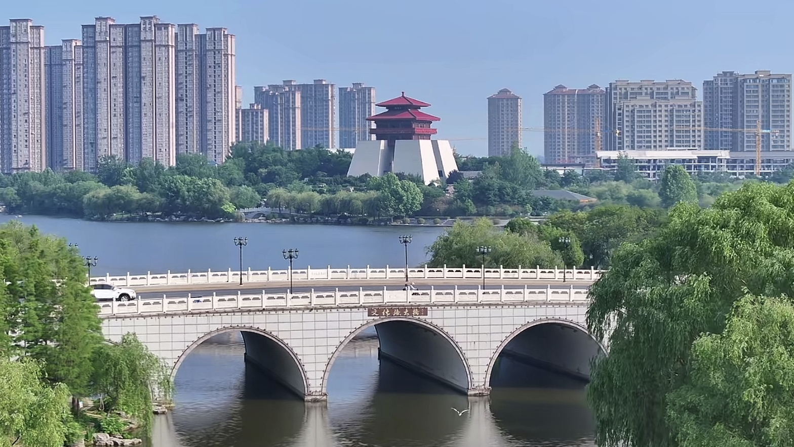
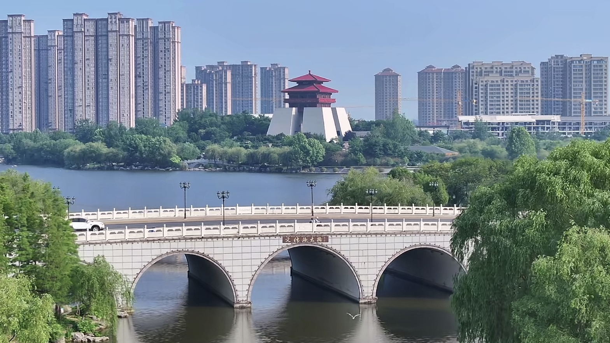

枣庄市，古称峄县，别称煤城、铁道故里，是山东省地级市，位于山东省南部，苏鲁豫皖四省交界处。 作为中国首个 “海峡两岸交流基地” 和 “全国双拥模范城”，枣庄是连接华东与华北的重要交通枢纽， 也是淮河文化与齐鲁文化交融的核心地带。 自夏朝时期就有人类在此繁衍生息，明清时期因煤炭开采而兴盛，素有 “鲁南明珠” 之称。 枣庄文化兼容并蓄，以 “台儿庄大战精神” 为代表的红色文化与 “运河文化”“奚仲造车文化” 交相辉映， 被誉为 “活着的运河古城”。1988 年，枣庄被国务院公布为国家重点风景名胜区。
枣庄地处鲁中南低山丘陵南部地区，地势北高南低，东依沂蒙山，西濒微山湖，京杭大运河穿境而过。 作为国家重要的能源基地和建材工业基地，枣庄拥有丰富的煤炭、石膏、石灰石等矿产资源，是山东省重要的工业城市之一。 近年来，枣庄正加速向 “山水园林城市” 转型，依托台儿庄古城、抱犊崮国家森林公园等旅游资源， 打造 “江北水乡・运河古城” 文化旅游品牌，成为淮海经济区重要的旅游目的地和区域性中心城市。
枣庄是一座具有深厚历史文化底蕴的城市，早在 7300 年前就有人类在此聚居，创造了灿烂的北辛文化。 春秋战国时期，枣庄为鄫国、滕国、薛国所在地，是造车鼻祖奚仲、科圣墨子、工匠祖师鲁班的故里。 近代以来，枣庄更是成为中国革命的重要策源地之一。 1938 年，台儿庄大战在此爆发，中国军队在此击溃日军精锐部队，取得了抗战以来最大胜利，被誉为 “中华民族扬威不屈之地”。 此外，枣庄还是铁道游击队的故乡，这些英勇的抗日事迹至今仍被广为传颂。
枣庄是 “中国民间文化艺术之乡”，拥有丰富的非物质文化遗产，如柳琴戏、鲁南皮影戏、峄城石榴园会等。 作为 “运河文化” 的重要承载地，台儿庄古城保存了明清时期的古运河河道和建筑风貌，被联合国教科文组织称为 “活着的运河”。 近年来，枣庄积极扩大对外交流，与美国、德国、日本等国家的城市建立了友好合作关系， 每年举办的 “中国枣庄国际石榴节” 和 “台儿庄古城国际马拉松赛” 吸引了大量国内外游客。 凭借独特的文化魅力和开放包容的城市形象，枣庄正逐步成为连接东西方文明的重要纽带。
 
